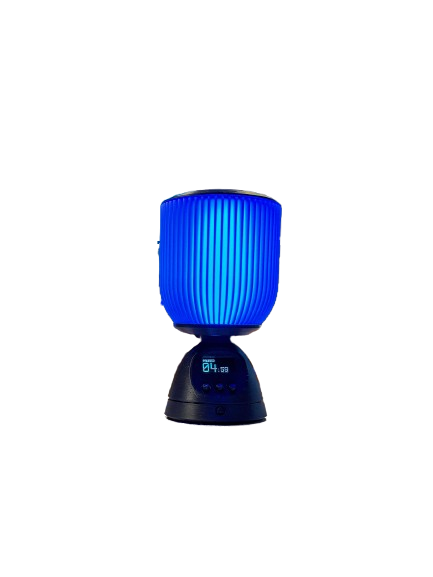
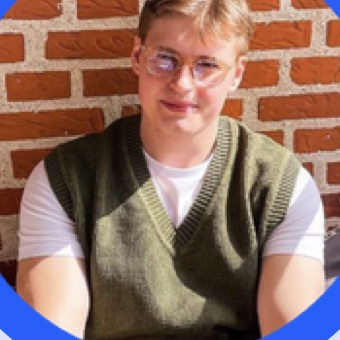

Robotics & manufacturing engineer who builds flexible production systems
- based
- Randers, Denmark
- degree
- MSc Manufacturing Technology, Aalborg University
- focus
- Automation, machine vision, resilient manufacturing

Open to roles in robotics, automation and manufacturing
Lucas Bonde
2026About

I love continuous improvement and seeing ideas come to life through iterations, whether that is developing new production, optimising performance or preventing failures through predictive maintenance.
I am an engineer with a BSc in Robotics and an MSc in Manufacturing Technology from Aalborg University, and I thrive in a dynamic environment with constant improvement and innovation.
I work best in a team where a problem can be discussed, broken down into manageable steps and solved in milestones. My approach is structured, and I care about continuous improvement: developing a new production setup, optimising one that already runs, or preventing failures before they happen.
During eight months in the Royal Life Guards I was appointed “Post for Gevær”, responsible for the rest of my group, so I am used to including everyone and making sure the task is understood.
Outside work I am usually perfecting a pizza recipe, doing CrossFit or tinkering with an electronics project.
Watch a short video about meSelected
work
05 projects · 2024 – 2026
Experience
& education
Experience
-
2025
Project-oriented stay · Körber Supply Chain
Built an end-to-end vision tool that classifies customer product images, working alongside the R&D group with weekly feedback in both directions.
-
2021 – 2023
Co-founder · BONDe CREATIONS
Co-founded and ran a business delivering digital marketing to small and medium-sized companies, with full ownership of strategy, delivery and client relationships.
-
2020 – 2021
Military service · The Royal Life Guards
Appointed “Post for Gevær”, holding responsibility for the remaining guards during shifts, on and off duty.
-
2017 – 2018
Gymnastics instructor · Randers Gymnastiske Forening
Planned and ran weekly training for children aged 6 to 12. Volunteer.
Education
-
2024 – 2026
MSc Manufacturing Technology · Aalborg University
AI, robotics and automation, manufacturing systems, process and production technology, operations management and advanced machine vision. Thesis on plug-and-produce manufacturing control.
-
2021 – 2024
BSc Robotics · Aalborg University
Robot kinematics and dynamics, control systems, CAD and machine vision. Thesis on autonomous cone placement around aircraft.
Skills
Automation & robotics
- ROS & ROS 2
- PLC
- Gazebo
- Webots
- RoboDK
Data & AI
- Python
- C++ / C / C#
- MATLAB
- TensorFlow / Keras
- OpenCV
- YOLO
Manufacturing
- Flexible & modular manufacturing
- Resilient manufacturing
- Predictive maintenance
- Anomaly detection
- Sensor data analysis
- Design for manufacturing
- Process optimisation
Systems & integration
- Asset Administration Shell
- MQTT & Unified Namespace
- PackML
- Docker
- PostgreSQL
Ways of working
- Scrum & agile
- Gantt planning
- Danish, native
- English, fluent